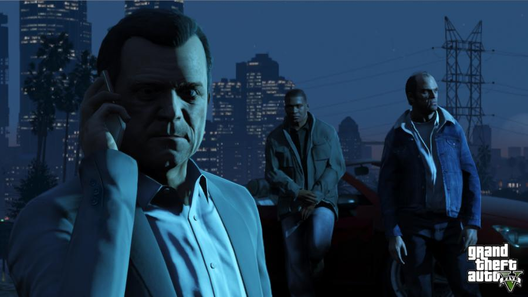
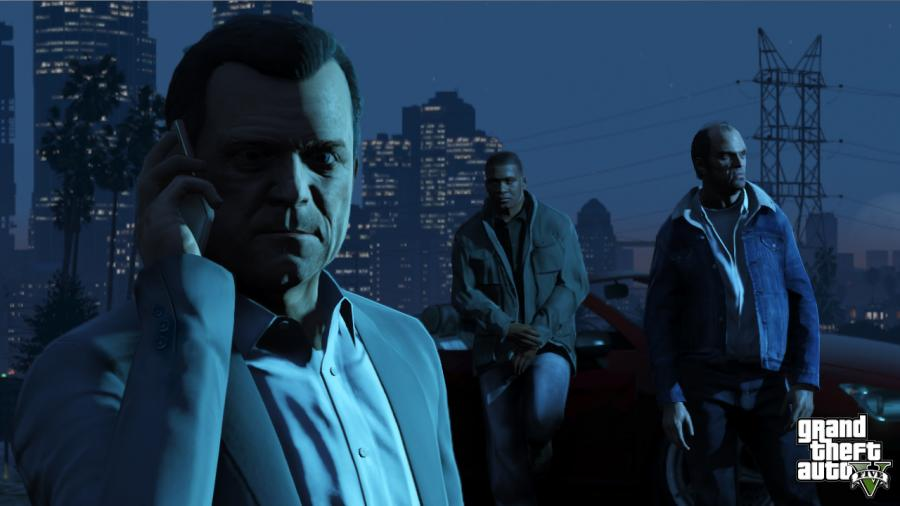
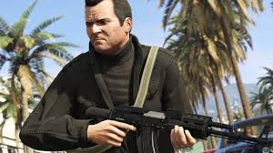
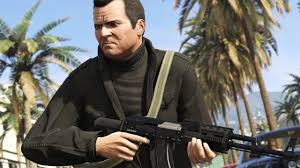

Tanggal rilis: 17 September 2013 (Indonesia)
Studio: Rockstar North
Produser: Leslie Benzies
Bahasa: Inggris


"Franklin Clinton adalah salah satu dari tiga protagonis yang ada di Grand Theft Auto V , bersama dengan Michael De Santa dan Trevor Philips
Franklin lahir di South Los Santos pada 1988. Ia tidak pernah tau siapa itu ayahnya, dan ibunya merupakan seorang pecandu kokain. Ketika masih kecil, Franklin sering mendengar cerita dari orang-orang tentang ayahnya yang sering melakukan kekerasan terhadap ibunya, hal itu mungkin yang membuat ibunya kemudian menjadi pecandu kokain. Ayah Franklin meninggalkan ibu Franklin ketika sedang mengandung Franklin. Kecanduan narkoba pada ibunya akhirnya menyebabkannya meninggal ketika Franklin masih muda.
Setelah kematian ibunya, Franklin pergi ke kakek dan neneknya, disinilah Franklin bertemu dengan Tonya Wiggins dan JB Bradshaw. Meskipun sering diperlakukan manja oleh neneknya di rumah, tapi diluar rumah, Franklin merupakan seorang brandalan. Salah satu kebrandalan pertama yang ia lakukan adalah menjual rokok bersama Bradshaw. Bisnis kecil itu berjalan lancar sampai akhirnya kakek Franklin berhasil menangkap Franklin yang sedang tertangkap basah berjualan rokok. Beberapa waktu kemudian, kakek dan nenek Franklin meninggal, dan Franklin tinggal bersama bibinya, Denise Clinton.
Franklin sekolah di Davis High School bersama dengan Lamar Davis, Tanisha Jackson dan Tonya Wiggins, tapi kemudian mereka diusir karena menyerang seorang guru. Pada masa itu, ia mulai berkenalan dengan kehidupan geng, narkoba, dan pencurian bersama temannya yaitu Lamar. Pada pencurian bank pertama mereka, mereka berhasil mendapat uang sebesar $2000, tapi mereka tidak bisa menyimpannya dikarenakan uang mereka terkena tumpahan cairan. Franklin juga bekerja pada pengedar narkoba lokal bernama Marcus. Franklin pernah masuk penjara tahun 2008, karena tertangkap basah saat melakukan kejahatan. Setelah dibebaskan dari sana, ia memutuskan untuk meninggalkan kehidupan gengnya, dan menjalankan kehidupan normal.
Franklin dan Lamar mulai bekerja pada Simeon Yetarian. Yetarian memiliki sebuah dealer mobil di Los Santos. Yetarian menjual mobilnya dengan cara curang kepada orang-orang yang umumnya tidak terlalu kaya. Franklin pernah mendapat SMS dari Tanisha yang mengatakan bahwa ia ingin putus karena kematian saudaranya dan karena ia takut kehidupannya dapat rusak mengikuti kehidupan Franklin yang juga rusak.

Michael De Santa , sebelumnya Michael Townley , adalah karakter dalam seri Grand Theft Auto yang muncul sebagai salah satu dari tiga protagonis di Grand Theft Auto V , bersama Franklin Clinton dan Trevor Philips . Dia diperankan oleh Ned Luke .
Michael lahir pada tahun 1965 atau 1968 , kemungkinan di Midwest . Sebagai seorang anak, dia tidak memiliki kemewahan dan hak istimewa yang dimiliki anak-anaknya sendiri, dan tumbuh di lingkungan yang tidak memiliki taman trailer bersama orang tuanya. Seperti Trevor dan Franklin , Michael memiliki pendidikan yang keras karena ayahnya yang alkoholik dan kasar secara fisik, yang kemudian meninggalkannya. Ibu Michael, yang juga meninggalkannya, diberi tahu berbagai versi alasan ayahnya pergi, termasuk, namun tidak terbatas pada, dia melewatkan kota, ditabrak kereta api, dan bergabung dengan angkatan laut. Di masa sekolah menengahnya, Michael adalah gelandang terkenal untuk tim sepak bola seluruh negara bagian, bahkan menampilkan performa luar biasa selama pertandingannya dan kadang-kadang fotonya dimuat di koran lokal. Namun, masalah temperamen dan cedera yang terus-menerus pada akhirnya memaksanya untuk berhenti.
Sebagai seorang dewasa muda, Michael memulai kehidupan kriminal. Menurut Michael, dia dipenjara dua kali pada saat dia berumur dua puluh. Selama di penjara, Michael belajar banyak keterampilan, termasuk menggunakan senjata tato dengan menato namanya di pantat teman satu selnya. Dia melakukan perampokan pertamanya pada tahun 1988 , di mana dia berhasil mencuri $ 10.000 dari sebuah usaha kecil di pinggiran Carcer City . Michael menyempurnakan keterampilan kriminalnya untuk menjadi penembak jitu yang ahli dan pemimpin perampokan yang efisien meskipun ia mengalami kegagalan dan kekurangan. Selama periode ini, dia mengasosiasikan dirinya dengan Lester Crest , seorang perencana hebat yang kemudian membantu Michael dalam merencanakan perampokan dan tugas lainnya.
Michael bertemu Trevor Philips saat dia mengawal kargo melintasi perbatasan. Saat Trevor menunggu untuk menemui majikannya yang tidak dikenal, dia melihat bukan hanya satu tapi dua jejak debu di jalan, meskipun dia diberitahu hanya akan ada satu orang yang menemuinya dengan membawa barang tersebut. Michael keluar dari kendaraan pertama sementara seorang warga sipil yang lebih tua keluar dari kendaraan kedua. Ternyata, warga sipil yang lebih senior telah dibajak oleh Michael. Saat Michael mencoba melarikan diri dengan tergesa-gesa dengan berjalan kaki, warga sipil yang lebih tua itu berusaha menarik perhatian Trevor atas apa yang baru saja terjadi. Trevor mendekati warga sipil dan menembakkan pistol suar ke mata pria itu, membunuhnya secara brutal. Dia dan Michael membuang mayatnya ke danau setelahnya, yang kemudian digambarkan Trevor sebagai hal yang mengerikan karena suar masih menyala di dalam tengkorak pria itu. Trevor dan Michael sama-sama muntah karena bau busuk dari mayat yang terbakar masih tersisa. Setelah menyadari betapa baik mereka bekerja sama, Michael membawa Trevor yang tidak memiliki tujuan di bawah sayapnya sebagai mitra untuk berbagai kejahatan yang akan dilakukannya. Mereka berdua cukup sukses dalam profesinya. Namun, Michael mengklaim mereka selalu miskin dan terus-menerus melarikan diri dari hukum, karena masalah kemarahan Trevor akan menyebabkan dia membunuh seseorang di siang hari bolong, sementara kehati-hatian, pandangan jauh ke depan, dan gaya kutipan khas Michael dari film-film Solomon Richards menarik perhatian. yang menyebabkan dia dan Trevor segera meninggalkan kota setelah menyelesaikan pekerjaannya.

Karakter Trevor Philips dalam GTA 5 adalah tokoh protagonis yang muncul sebagai salah satu dari tiga pelaku utama bersama dengan Michael De Santa dan Franklin Clinton di Grand Theft Auto V , dan juga sebagai karakter utama dalam Grand Theft Auto online . Trevor Philips muncul saat pertama kali permainan berjalan dimana ia menjadi salah satu dari 4 perampok sebuah bank di Ludendorff, North Yankton.
Trevor lahir dan dibesarkan di Kanada , dekat Kanada / perbatasan Amerika Serikat ia menyebutnya " Canadian wilayah perbatasan Amerika " . Dalam percakapan dengan Franklin , dia mengaku " dibesarkan di lima provinsi , dua negara , empat belas rumah yang berbeda , delapan ayah , tiga rumah perawatan , dua lembaga pemasyarakatan.
Ketika masih anak-anak , dia memiliki sejarah kekerasan dan kemarahan yang banyak . Trevor juga menyebutkan bagaimana ia membunuh berbagai hewan dan " drifter " selama tahun-tahun pada awal hidupnya . Ayahnya adalah orang yang kasar , sementara ibunya sombong dan memperlakukannya dengan rendah . Ketika ia masih kecil , ayah Trevor meninggalkan dia di pusat perbelanjaan . Trevor juga memiliki saudara bernama Ryan , yang kemungkinan dibunuh oleh Trevor sendiri .
Trevor juga mengungkapkan bahwa ia putus sekolah , yang merupakan alasan mengapa ia memiliki kekurangan dalam beberapa pengetahuan dasar , seperti lokasi Roma kuno , yang menurutnya menjadi bagian dari Amerika. Ia juga mengungkapkan bahwa ia memiliki masalah dengan tata bahasa yang tidak improvisasi . Ada kemungkinan juga bahwa ia memiliki sedikit pendidikan formal , karena ia menyebutkan selama ditangkap polisi ia mengambil sekolah kelas malam. Trevor memang memiliki bakat yang cukup baik dibidang matematis, yang dikonfirmasi oleh Wade yang mengatakan bahwa Trevor sangat baik pada " angka " . Selain itu, Trevor juga menerbangkan jet. Dia terdaftar di Royal Canadian Angkatan Udara pilot jet tempur , namun beberapa hari sebelum menyelesaikan latihannya , Trevor dianggap mentalnya tidak stabil sehingga ia dikeluarkan.
Setelah dikeluarkan , Trevor menjadi drifter dan melakukan kejahatan kecil tanpa tujuan tertentu. Dia pernah berbicara dengan Lamar bahwa ia pernah melakukan kejahatan berat sampai ia bertemu Michael . Mereka pertama kali bertemu satu sama lain saat mengawal kargo melintasi perbatasan .


.jpg)
.jpg)


 

 


.jpg)
Mahasiswa
NIm : 10123201
Kelas : IF-5